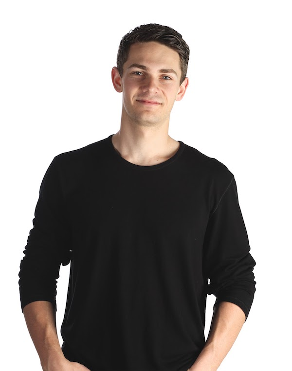

Welcome

Hello! My name is Bret Lorimore, I am a senior at Oregon State University
studying Computer Science with a Math minor. In my free time I enjoy
cooking, being outdoors, and taking photos. Thanks for visiting!